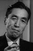

Also known as:七人の侍 (original title)
Country:Japan, 207 minutes
Spoken languages:
Genres:Action, Drama
Director(s):Akira Kurosawa
Writer(s):Akira Kurosawa, Shinobu Hashimoto, Hideo Oguni
Video Codec:Unknown
Number: 1716


Certification:NR
Storyline:
A samurai answers a village's request for protection after he falls on hard times. The town needs protection from bandits, so the samurai gathers six others to help him teach the people how to defend themselves, and the villagers provide the soldiers with food.
Cast: 


Medium: Original DVD,
Loaned: No
Aspect ratio: Unknown